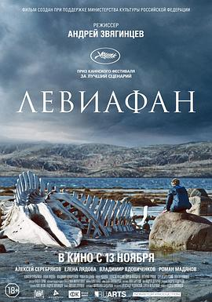

利维坦 / Левиафан
又名：荒谬启示录(港) / 缠绕之蛇(台) / Leviafan / Leviathan
“上帝只有在权利来临时才会存在”
作品信息
| 导演 | 安德烈·兹维亚金采夫 |
| 编剧 | 奥莱格·涅金 / 安德烈·兹维亚金采夫 |
| 主演 | 阿列克谢·谢列布里亚科夫 / 叶莲娜·利亚多娃 / 弗拉季米尔·弗多维琴科夫 / 罗曼·迈迪安诺夫 / 安娜·乌克洛娃 / 阿列克谢·罗津 / 塞尔吉·波克霍达夫 / 柏拉图·加米涅夫 / 谢尔盖巴切乌尔斯基 / 瓦列里·格里什科 / 阿拉·伊明兹瓦 / 玛格丽塔·舒比纳 / 德米特里·贝科夫斯基-罗马绍夫 / 谢尔盖·博里索夫 / 伊戈尔·萨沃金 |
| 类型 | 剧情 / 犯罪 |
| 制片国家/地区 | 俄罗斯 |
| 语言 | 俄语 |
| 上映日期 | 2014-05-23(戛纳电影节) / 2015-02-05(俄罗斯) |
| 片长 | 140分钟 |
| IMDb | tt2802154 |
最后一次看到是 2026-08-12T21:12:35+08:00 · 豆瓣原页